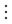

        <nav id="customFixedSections" class="tabsbar">
        </nav>
        <nav id="rootbar" class="tabsbar">
            <button class="tp_tiled_btn" data-tab-id="home" data-active="1" title="대시보드">대시보드</button>
            <button class="tp_tiled_btn" data-tab-id="stats" title="통계">📊 통계</button>
            <div class="dummy_spacer fit_for_icon"></div>
            <button class="tp_tiled_btn fit_for_icon" data-tab-id="more" title="열린 페이지"></button>
        </nav>
